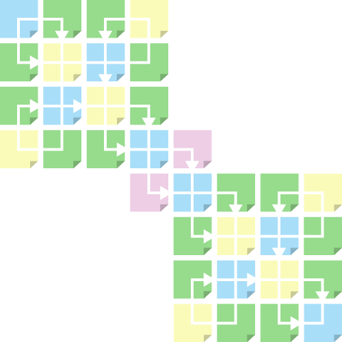
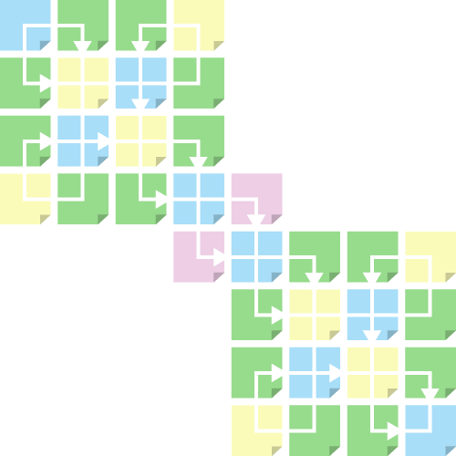

This equation governs the value an entire class of goods;
It determines success in delivering complex value propositions;
It shapes business strategy and government policy;
This equation governs the value an entire class of goods;
It determines success in delivering complex value propositions;
It shapes business strategy and government policy;

Everybody can code
Punched cards and paper tape were once used to write computer code. Of course, not everybody could program a computer.
Imagine a new kind of code using Post-It Notes®, making programmers out of Army officers and physicians; field agents, supervisors and technicians; postal workers and flight attendants; the policymaker and the legislator.
Ideas, observations, and insight
They may not be designers but they know a lot about getting a particular job done, better, faster and cheaper.
They have ideas, observations and insight, in their heads and across various files and formats, they routinely put these into messages and meeting notes; sketches and diagrams; maps and plans; spreadsheets and charts. They tag photos and videos.
Embedded logic
In there are design statements; except that nobody is really sure or aware. Organizations are inherently noisy.
What if an embedded logic could filter the noise and passively convert these statements and expressions into a rich and complete design? As new ideas, observations and insights flow, the design updates itself; or at least begs for attention!


32 Design Functions
Describe every aspect of a service in terms of structure and behaviour; they define the service genome.
24 Design Arguments
For expressing ideas, observations & insight; the vocabulary of the Design Functions; as simple as HTML tags
8 Design Perspectives
Without them, no value proposition are not complete; customer and service provider perspectives; the hidden cube


design#code combines the tradition of industrial design with the tradecraft of strategy, to generate superior designs in fast cycles. A pair of design canvases embed a service design logic, based on economics, industrial engineering and organization science.
Like spreadsheets for design, when complete, the canvases passively generate the design of a service product, in the form of an instruction set or pseudo code, that teams can implement. Encoded in design are the provider’s business model and strategy.
Each canvas has a 4x4 grid of interlocked panels that represent the 32 Design Functions that process design input (canvas content) into meaningful information on one or more aspects of a service design. Each panel also acts as a special folder for maintaining and updating the design
 

The canvases make it easy to engage stakeholders in the design effort, allowing them to contribute whatever they can, whenever they can, with spontaneity and speed, without necessarily being present at the same place or at the same time. Teams can work asynchronously and in parallel, building progressively faster on each piece of input, as the canvases accumulate content.
A single unbroken thread of logic passes through the 32 Design Functions across the two canvases. through readily integrate multiple perspectives and lines of inquiry; help teams elaborate, iterate
and draw conclusions on each other’s input; help identify conflicts and force meaningful discussions; provide multiple paths across the canvases to prevent deadlock; and they allow teams to cross-reference and fill in the blanks like in crosswords, Sudoku and Scrabble-type games.


A system for developing breakthrough solutions in the form factor of services
Or, let us watch it for you.
[EMAIL CAPTURE FIELD]